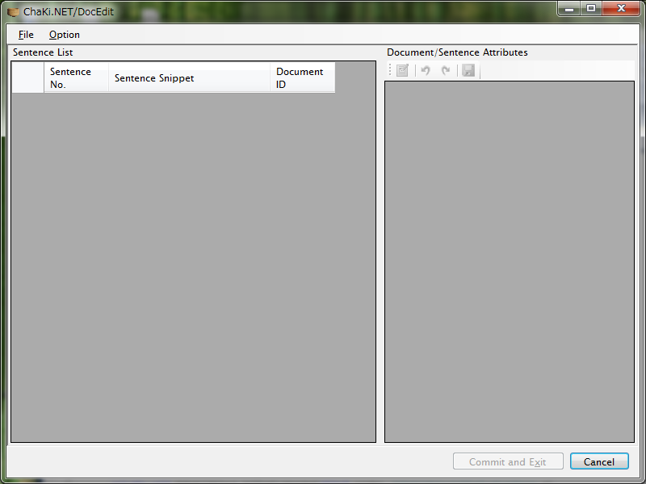
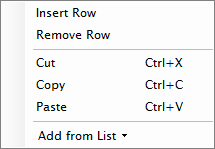

概要
DocEditは、既存コーパス(Database)に含まれる文をリストし、ドキュメントの割付を変更したり、各Sentence, Documentの属性をそれぞれ編集することのできるGUIツールです。
従来、インポート時に複数ファイルを指定したり、明示的に.bibファイルを指定（単一ファイルインポート時）することでコーパス内にドキュメントを作成していましたが、この方式はわかりにくい上に修正が利きませんでした。 また、Sentence属性/Document属性は、"Attribute Panel"を用いていつでも修正できますが、その対象は検索結果に存在するSentence/Documentに限られていました。
本ツールは、これらの操作を独立したGUIにより提供するものです。Sentence以上の粒度でコーパスを表示・編集する目的では、一覧性があるためChaKi本体よりも使い勝手がよいかもしれません。
使い方
> DocEdit [CorpusFileName] (-i=[ImportFileName]) (-c) (-h)
CorpusFileName: .db or .def file
-i: Import CSV data
ImportFileName: a CSV file containing sentence/document attributes
-c: Non-interactive, console-only mode.
Use with -i to auto-commit imported data.
-h: Show this help
引数を渡さずに起動すると、対象コーパスなしの状態で画面が表示されます。コンソール(CMD.EXE)以外から起動した場合は、コンソールウィンドウが表示された後にメインウィンドウが表示されます。 
{kind=link}
コンソールからバッチ処理的にCSVファイルを適用してセーブするには、たとえば次のようにします。
> DocEdit sanshiro.db -i=sanshiro-bib.csv -c
※ ここで、"-c"をつけないと、インポートが完了した（未コミットの）状態で編集画面が開きます。
基本機能
対象コーパスを開く
メニューから、"File"-"Open"を選択します。ダイアログが表示されますので、SQLiteの場合は.dbファイルを直接選択します。MySQLの場合は、CreateCorpusで生成された.defファイルを選択します。
コーパスがロックされていると、タイムアウトを待ってエラーとなります。ChaKi本体で編集モードに入っている場合は編集モードを解除して下さい。
コーパスを開くと、まずSentence IDとDocument IDのマッピングがすべてメモリに読み込まれ、テーブルに表示されます。"Sentence Snippet"のカラムはオンデマンドでDBから非同期にロードされます。
{kind=link}
なお、ここに表示されるテクストはデフォルトで各文の先頭から10文字までです。（ただしWord区切りにかかる場合はWord末端まで。）文字列長はオプションにより変更可能です。
Sentence/Document属性を表示する
テーブルの任意の行を選択すると、右のテーブルにその文の親であるDocumentの属性およびSentece属性が表示されます。複数行を選択した場合、同じDocumentに属する場合はそのDocumentの属性が表示され、Sentenceについては選択範囲の文に共通な属性のみが表示されます。
編集機能
以下の変更はすべて単一のDatabase Transaction内で行われますので、Commit操作（後述）を行うまで確定しません。
Document割付を変更する
左テーブルで文をいくつか選択状態にしたうえでマウスを右クリックすると、Document一覧がPopupします。PopupからDocumentを選ぶことで、選択状態になっている文の属するDocumentが変更されます。新規Documentを割り当てる場合は、Popupの最下行にある"Add New"を選択すると、自動的にIDが発行され新規Documentが追加されます。
{kind=link}
Document/Sentence属性を編集する
右テーブルでマウスを右クリックすると次のようなコンテクストメニューが表示されます。

ここから、
- 属性の追加
- 属性の削除
- 属性のCut/Copy/Paste
を行うことができます。（"Add from List"は追って実装予定）
この右テーブルの内容は、Saveボタンを押すまではメモリ内のローカルな変更でありDatabaseには反映されません（さらにDocument割付の変更と共にCommitを行うまで最終確定しません）。
なお、ツールバーの"Edit Attribute" ボタンは、トグルボタンとなっており、通常はON状態です。OFFの状態では編集不可ですので、その場合はクリックしてON状態にしてから編集を開始して下さい。
編集結果を保存する
メニューから"File"-"Commit"を選択すると、すべての編集内容がDatabaseに反映され確定されます。逆にCommitを行わずにアプリケーションを終了すると、Databaseは元の状態のままで編集内容は捨てられます。 右下の"Commit and Exit"ボタンは、このCommit操作を行ったうえでアプリケーションを終了するためのものです。
Commit時にすべてのDocumentの持つ平文データが再計算され、またSentenceとSegmentの開始終了文字位置が再計算されますので、それらの数と長さに応じた時間がかかります。
その他の機能
CSV Export機能
メニュー"File"-"Export as CSV"を選択すると、全編集内容をCSVファイルにExportします。 CSVのカラムは、
- sentence_id
- text (Snip Lengthで指定した長さまで）
- document_id
- document_attributes
- sentence_attributes
となっています。属性は (<属性名>属性値</属性名>)* のXML Fragmentとして出力されます。 (4)のDocument属性は、各Document初出の行にのみ付加されます。
CSV Import機能
上記Export形式と同じ形式のCSVファイルの内容を、現在開かれているコーパスに対して適用します。
Sentenceの数がCSVファイルと現在開かれているコーパスとで異なる場合はインポートできません（エラーが表示されます）。 また、第２カラムのtextは属性を編集する際の目安として使うためにExportされているにすぎませんので、Import処理では使われません（変更しても無視されますし、コーパスの内容と一致しているかどうかの比較も行いません）。
下記にCSVファイルの冒頭部分を例示します。([改行]が実際の改行位置です）
sentence_id,text,document_id,document_attributes,sentence_attributes[改行] 0,"三四郎",0,"<Name>三四郎:表題</Name><BookTitle>三四郎</BookTitle><BookAuthor>夏目漱石</BookAuthor>","<Category>BookTitle</Category>"[改行] 1,"夏目漱石",0,"","<Category>BookAuthor</Category>"[改行] 2," 一",1,"<Name>三四郎:一</Name><BookTitle>三四郎</BookTitle><BookAuthor>夏目漱石</BookAuthor>","<Category>SectionTitle</Category>"[改行] 3," うとうととして目がさめる",1,"",""[改行] ....
この例では、 ID=0と1 のSentenceは、Document ID=0に属し、そのDocument属性は、
- Name="三四郎:表題",
- BookTitle="三四郎",
- BookAuthor="夏目漱石"
です。
また、ID=2と3 のSentenceは、Document ID=1に属し、そのDocument属性は、
- Name="三四郎:一",
- BookTitle="三四郎",
- BookAuthor="夏目漱石"
です。
さらに、
- ID=0のSentenceは、Category="BookTitle"、
- ID=1は、Category="BookAuthor"、
- ID=2はCategory="SectionTitle"、
というSentence属性がそれぞれ与えられます。（属性のkey, value値は任意であり、これはあくまでも一例です。適宜使いやすい値を定義してください。XML予約文字はなるべく避けてください。）